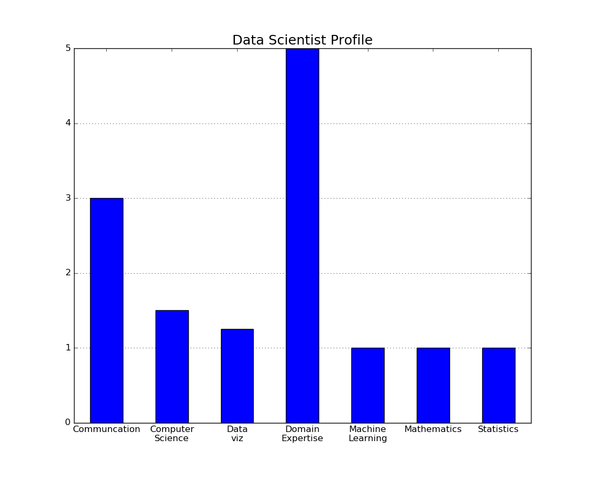
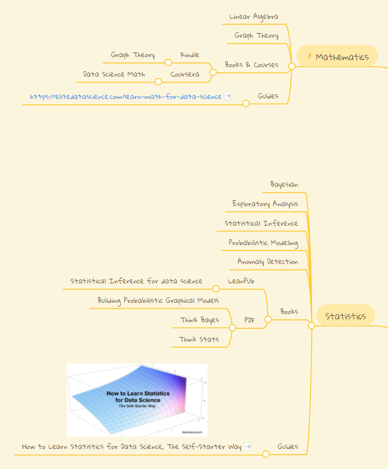

You want to be a data scientist but where do you begin? I decided that the first step for me should be a self assessment of my current knowledge/skills. Maybe this could be a beginning point for you also.
In the first chapter of "Doing Data Science" the authors talk about creating a data science profile. Essentially, a person gauges their skill level in seven categories( Data Viz, Machine Learning, Mathematics, Statistics, Computer Science, Communication, Domain Expertise). The skill levels are then plotted so that you can get an overarching view of yourself as a data scientist.
I thought that creating my own data scientist profile could help me better identify my strengths and weaknesses. For my profile, I ranked my self-perceived skill level for each category on a scale of 1 to 5. As I already knew, my profile heavily suggests that I should work on math and stats. If you want to create your own plot, the python code is below. I know it is a simple graph and could be done by hand but I like the practice of turning anything into code.
import numpy as np
import pandas as pd
import matplotlib.pyplot as plt
import matplotlib.patches as patches
# line below is included only if using jupyter notebook
# %matplotlib inline
# Score yourself on a scale of 1 to 5 in each of the categories
# Place values in score list
scores = {'Communcation': [3], 'Computer\nScience': [1.5], 'Data\nviz': [1.25],
'Domain\nExpertise': [5], 'Machine\nLearning': [1], 'Mathematics': [1],
'Statistics': [1]}
profile = pd.DataFrame(data=scores)
# Plot Data as a bar graph
fig = plt.figure(figsize=(11,9))
ax = fig.add_subplot(1,1,1)
profile.iloc[0].plot(kind='bar') # plots first row as a single bar graph
# Set graph layout and attributes
plt.title('Data Scientist Profile', fontsize=18)
plt.grid(True, color='black')
ax.set_axisbelow(True)
ax.xaxis.grid(False)
plt.xticks(fontsize=12)
plt.yticks(fontsize=12)
plt.xticks(rotation='horizontal', wrap=True)
fig.savefig('profile.png')

Now that I have this profile, what do I do next? To hone in on the gaps in my knowledge, I began outlining a study guide for each of these seven categories. The image below showcases a portion of my mind map with resources/topics for improving my grasp of mathematics and statistics related to data science. Putting together this mind map helped me to realize that I was not starting from scratch but in fact I had already collected several books and tutorials about these subjects. Possibly, this could be true for you also.

My hope is that from here on out, I will reassess my skills regularly and track my progress over the next year.